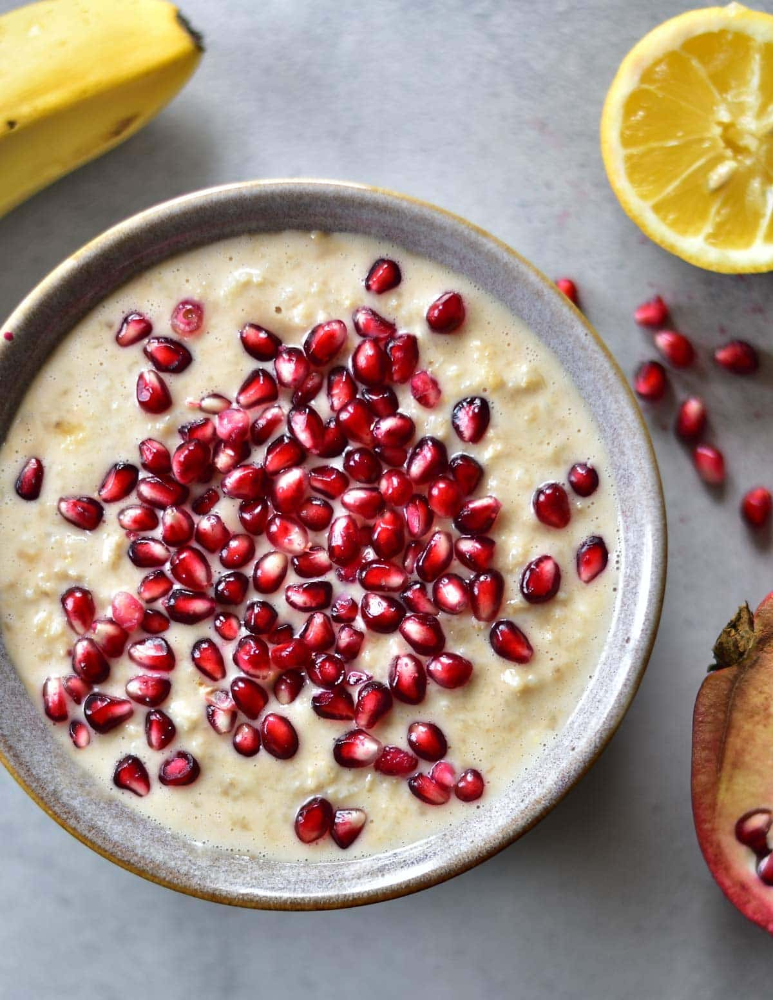

Porridge

Ingredients
- 1.5dl Water
- 1.5dl Milk
- 1.5 dl oats
- Fruits from 1 pomegranate
- Pinch of salt
Steps
- Add the water, milk, oats and salt to a caserole or small pot
- While stirring, bring to a boil
- Turn the heat down to a gentle boil and stir sporadically until the porridge has the desired consistency.
- Serve with the pomegranate on top.